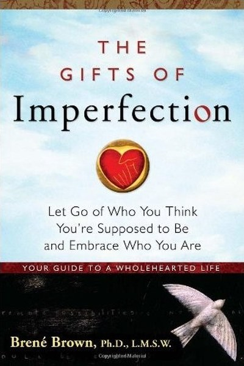

Library › Self-Improvement
The Gifts of Imperfection — Summary & Key Lessons

Let go of who you think you're supposed to be and embrace who you are.
📖 OPEN THE FULL INTERACTIVE BREAKDOWN →🌐 Read it in Hindi, Hinglish, Gujarati, Tamil & 22 more languages — free, with audio.
💡 The Big Idea
After a decade of research on shame and vulnerability, Brown identified what separates people who live wholeheartedly from those who don't: not talent or luck, but the willingness to be imperfect. The gifts — courage to be imperfect, compassion for self and others, and the connection that follows — are available to everyone who stops performing 'who they're supposed to be'. The book is a practical dismantling of shame and perfectionism, one guidepost at a time.
🧠 The 6 Key Lessons
Lesson 1: Wholeheartedness Is a Choice, Not a Trait
The Courage
Brown's research found wholehearted people — those with strong love, belonging and joy — share one thing: the courage to be imperfect. They choose authenticity over approval, even when it costs. The lesson: you don't need to become a different person; you need to choose different behaviour in the moments that scare you.
📖 Example: The person who admits 'I don't know' in a meeting loses a little face and gains a lot of trust — a daily courage anyone can practise. The practical edge: 'wholeheartedness is a choice, not a trait' is not a one-time decision — it's a habit that compounds… Read the full example →
⚡ Do this: Choose one moment this week to be imperfect on purpose: admit a mistake, ask a 'dumb' question, share something unfinished.
Lesson 2: Shame Can't Survive Being Spoken
The Shame
Brown defines shame as the fear of disconnection — 'I am bad', not 'I did something bad'. Her research-based remedy: shame loses power when it's spoken to someone who responds with empathy. Secrecy, silence and judgment are shame's food; empathy is its poison. The lesson: name the shame out loud, to a safe person, and it shrinks.
📖 Example: The 'shame spiral' — I failed, therefore I'm a failure — is interrupted the moment it's said to someone who says 'me too, that's human'. Here's the part that usually gets missed: 'shame can't survive being spoken' works quietly. You won't see it working in a… Read the full example →
⚡ Do this: Share one shame-based feeling with a trusted person this week. Notice what happens to its size.
Lesson 3: Perfectionism Is a Shield, Not a Standard
The Perfectionism
Brown's sharpest correction: perfectionism is not healthy striving — it's a shield against judgment, built on the belief that if we're perfect, we're safe from blame. It's addictive, exhausting and blocks the very connection it seeks. The alternative isn't mediocrity; it's doing your best and letting the outcome be judged without making the judgment about your worth.
📖 Example: The perfectionist who delays publishing, launching or speaking 'until it's ready' is not protecting quality — they're protecting against criticism. The real test of this lesson is a bad day: the principle that survives a crisis, a tight deadline and a… Read the full example →
⚡ Do this: Ship one imperfect thing this week: a post, a draft, a conversation you've been postponing. Let it be judged.
Lesson 4: Letting Go of What People Think
The Approval
Brown's research on belonging: we feel belonging when we're accepted as we are, which requires letting go of who we think we're supposed to be. Seeking approval is the opposite of belonging — it's fitting in, which is performance, not connection. The lesson: you can't belong anywhere while hiding the parts you think won't be accepted.
📖 Example: Fitting in at work means performing the role; belonging means being the person — and the second is where real trust forms. In practice, 'letting go of what people think' shows up in tiny daily choices long before it shows up in outcomes — the choice is… Read the full example →
⚡ Do this: Identify one 'supposed to be' expectation you're performing. Show the real version once this week.
Lesson 5: Compassion for Self Comes First
The Compassion
Brown's framework: you cannot be compassionate with others beyond your capacity for self-compassion. The inner critic's harshness leaks outward. Her practice: talk to yourself like someone you love — the same gentleness, the same 'everyone struggles' framing. Self-compassion is not self-indulgence; it's the foundation of resilience.
📖 Example: The person who berates themselves for one mistake is also the colleague who can't tolerate others' mistakes — the same voice, two directions. Most people nod at this principle and change nothing. The gap between agreeing and acting is where the whole game is… Read the full example →
⚡ Do this: Catch your inner critic once today and rewrite the sentence as you'd say it to a friend.
Lesson 6: Joy and Gratitude Are Trainable
The Joy
Brown's counterintuitive finding: people who experience deep joy also practice gratitude — not because they're lucky, but because gratitude is the discipline that makes joy safe to feel. She found many people 'dress rehearsal' tragedy — waiting for the other shoe to drop — because they never learned to let joy in. The practice: gratitude as a daily, specific ritual.
📖 Example: The family that shares one grateful thing at dinner trains joy — and research shows it measurably raises wellbeing. The uncomfortable truth about this lesson: it requires doing the boring version first — the unglamorous reps that nobody claps for. Read the full example →
⚡ Do this: Start a daily gratitude practice: one specific thing, said out loud or written, at a fixed time.
✅ 5-Step Action Plan
- Practise one deliberate imperfection this week.
- Speak one shame to a safe person.
- Ship one imperfect thing and let it be judged.
- Stop performing one 'supposed to be' expectation.
- Start a daily specific gratitude ritual.
⚠️ When This Doesn't Work
Brown's 'let go of what people think' is liberating — and it can be weaponized by manipulators who want you to stop listening to legitimate feedback. Colonel Parker convinced Elvis that the world was against him and only Parker understood him — 'ignore what they think' became the mechanism of isolation and control. The caveat: caring less about others' opinions is healthy; caring about NO opinions is how people get captured. The skill is discernment: whose feedback is signal and whose is noise. Brown's book teaches the letting go; the keeping of good counsel is the other half.
💀 The Graveyard Proves It
🎤 Elvis Presley — The Manager Who Took 50%. Burn: Half of everything, and the world. Read the full case study →
💬 Best Quotes from The Gifts of Imperfection
- “Owning our story can be hard but not nearly as difficult as spending our lives running from it.”
- “Imperfections are not inadequacies; they are reminders that we're all in this together.”
- “You can't get to courage without walking through vulnerability.”
Interactive version: mark lessons as read, listen in your language, share quote cards.